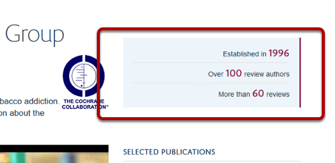
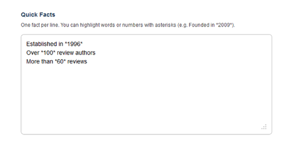
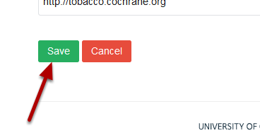

Add / Edit Quick Facts¶
Note
These user guides are being phased out and replaced with the guides on Haiku Knowledge Base
Quick facts should be short and preferably include a number. Numbers can be highlighted to gain your reader’s attention.
Quick Facts¶
Quick facts display on the right hand side of a Research Group page.
Edit page¶

Go to the Research Group page you would like to edit. Click on the Edit on the tool bar on the top of the page.
Enter your Quick Facts¶
Scroll down the page until you reach the Quick Facts box. Enter your facts into the Quick facts box. Enter each fact on a separate line. You can highlight a number or a word by putting asterisks around it.
Save your changes¶
Scroll to the bottom of the page. Click on Save.